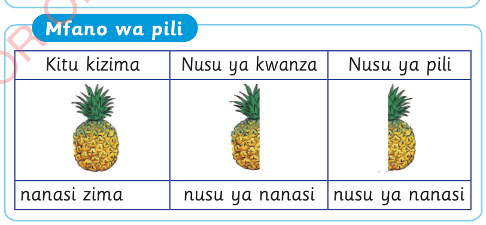

Tutambue nusu ya vitu halisi
Vipande viwili vya kitu kimoja vinavyolingana huunda kitu kizima kimoja. Nusu ni kipande kimoja kati ya vipande viwili vinavyolingana. Kwa mfano, unaweza kukata chungwa katika vipande viwili vinavyolingana. Kila kipande ni nusu ya lile chungwa.
Mfano wa kwanza
Kitu kizima
Nusu ya kwanza
Nusu ya pili


chungwa zima
nusu ya chungwa
nusu ya chungwa
Mfano wa pili
Kitu kizima
Nusu ya kwanza
Nusu ya pili



nanasi zima
nusu ya nanasi
nusu ya nanasi
Kuhesabu Std 2 SEPT 2024.indd 101
07/11/2024 08:44